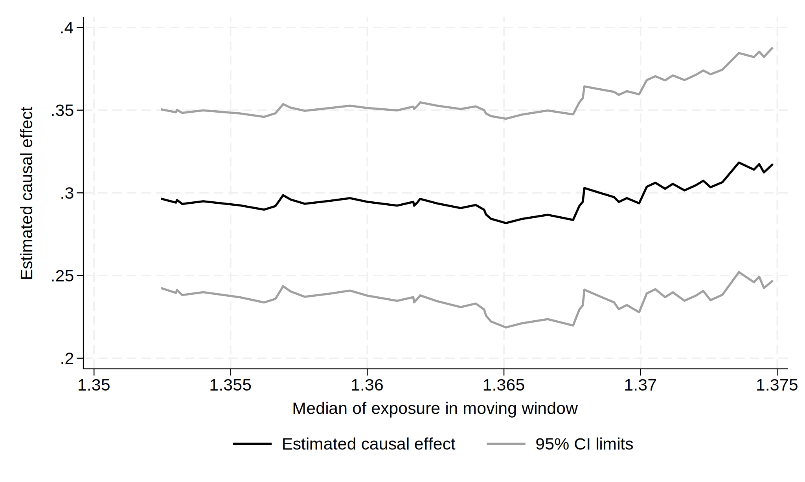

use ../data/ivmwdata, clearMoving window estimator
Read in simulated data with different outcome-exposure relationships; y# outcome, x exposure, g instrumental variable (genotype).
Plot outcome-exposure relationships
twoway line y1 x, sort(x)
qui gr export ./img/ivmw-plot-01.svg, replace
twoway line y2 y3 y4 x, sort(x)
qui gr export ./img/ivmw-plot-02.svg, replace
twoway line y5 x, sort(x)
qui gr export ./img/ivmw-plot-03.svg, replace
Example moving window fits.
ivmw, window(3950) par(x): ivreg2 y1 (x = g)
qui gr export ./img/ivmw-plot-04.svg, replaceTime variable: res_order, 1 to 4000
Delta: 1 unit
(running ivreg2 on estimation sample)
Rolling replications (51)
----+--- 1 ---+--- 2 ---+--- 3 ---+--- 4 ---+--- 5
.................................................. 50
.
file C:\Users\tom\AppData\Local\Temp\ST_d5c_000001.tmp saved as .dta format
(rolling: ivreg2)
ivmw, window(3950) par(x): ivreg2 y2 (x = g)
qui gr export ./img/ivmw-plot-05.svg, replaceTime variable: res_order, 1 to 4000
Delta: 1 unit
(running ivreg2 on estimation sample)
Rolling replications (51)
----+--- 1 ---+--- 2 ---+--- 3 ---+--- 4 ---+--- 5
.................................................. 50
.
file C:\Users\tom\AppData\Local\Temp\ST_7430_000001.tmp saved as .dta format
(rolling: ivreg2)ivmw, window(3950) par(x): ivreg2 y3 (x = g)
qui gr export ./img/ivmw-plot-06.svg, replaceTime variable: res_order, 1 to 4000
Delta: 1 unit
(running ivreg2 on estimation sample)
Rolling replications (51)
----+--- 1 ---+--- 2 ---+--- 3 ---+--- 4 ---+--- 5
.................................................. 50
.
file C:\Users\tom\AppData\Local\Temp\ST_7304_000001.tmp saved as .dta format
(rolling: ivreg2)
ivmw, window(3950) par(x): ivreg2 y4 (x = g)
qui gr export ./img/ivmw-plot-07.svg, replaceTime variable: res_order, 1 to 4000
Delta: 1 unit
(running ivreg2 on estimation sample)
Rolling replications (51)
----+--- 1 ---+--- 2 ---+--- 3 ---+--- 4 ---+--- 5
.................................................. 50
.
file C:\Users\tom\AppData\Local\Temp\ST_55f8_000001.tmp saved as .dta format
(rolling: ivreg2)
ivmw, window(3950) par(x): ivreg2 y5 (x = g)
qui gr export ./img/ivmw-plot-08.svg, replaceTime variable: res_order, 1 to 4000
Delta: 1 unit
(running ivreg2 on estimation sample)
Rolling replications (51)
----+--- 1 ---+--- 2 ---+--- 3 ---+--- 4 ---+--- 5
.................................................. 50
.
file C:\Users\tom\AppData\Local\Temp\ST_21b0_000001.tmp saved as .dta format
(rolling: ivreg2)
Change window size (e.g. for outcome y2).
ivmw, window(3750) par(x): ivreg2 y2 (x = g)
ivmw, window(3000) par(x): ivreg2 y2 (x = g)
ivmw, window(2000) par(x): ivreg2 y2 (x = g)
ivmw, window(1000) par(x): ivreg2 y2 (x = g)Save the moving window dataset.
ivmw, window(3950) par(x) saving(ivmw): ivreg2 y2 (x = g)Use different iv commands.
ivmw, window(3950) par(x): ivregress 2sls y (x = z1 z2 z3)
ivmw, window(3950) par(x): ivregress liml y (x = z1 z2 z3)
ivmw, window(3950) par(x): ivregress gmm y (x = z1 z2 z3)
ivmw, window(3950) par(x): ivlsmm y (x = z1 z2 z3)
ivmw, window(3950) par(x): ivmsmm y (x = z1 z2 z3)
ivmw, window(3950) par(b1): ivtsps y (x = z1 z2 z3)
ivmw, window(3950) par(b1): ivtsps y (x = z1 z2 z3), link(logadd)
ivmw, window(3950) par(b1): ivtsps y (x = z1 z2 z3), link(logmult)
ivmw, window(3950) par(b1): ivtsps y (x = z1 z2 z3), link(logit)
ivmw, window(3950) par(b1): ivtsri y (x = z1 z2 z3)
ivmw, window(3950) par(b1): ivtsri y (x = z1 z2 z3), link(logadd)
ivmw, window(3950) par(b1): ivtsri y (x = z1 z2 z3), link(logmult)
ivmw, window(3950) par(b1): ivtsri y (x = z1 z2 z3), link(logit)